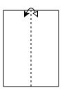
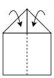
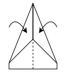
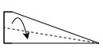

Section 1: The Dart
The fold
Start with a sheet in portrait and fold it in half lengthwise, then open it back up. That center crease is your guide for everything else.

Fold the top two corners down to meet the center line. You should now have a point, and a faint sense of accomplishment.

Fold those angled edges in to the center line again. The point gets longer and sharper.

Fold the whole plane in half along that first crease, so the flaps sit on the outside.
Fold the top edge down on each side to make the wings, lining them up with the bottom and keeping them even.

Open the wings out flat into a T, hold it underneath near the nose, and throw it level with a smooth, firm flick.
Watch it done
If the diagrams didn't land, don't take it personally. Some things are easier to just watch. Fold the sheet in half the long way, then open it back up. Bring the top two corners in to the center crease. Fold the slanted edges in again, so the nose gets long and sharp. Fold the whole plane in half, pull each wing down to the bottom, and open them back out into a flat T. That's your dart. Now go try it, dignity mostly intact.
Press play, or tap any line above to jump to that moment in the video.
Pre-flight check
One last thing before take-off. If your dart plane starts nose-diving straight into the carpet, what's the most likely fix?